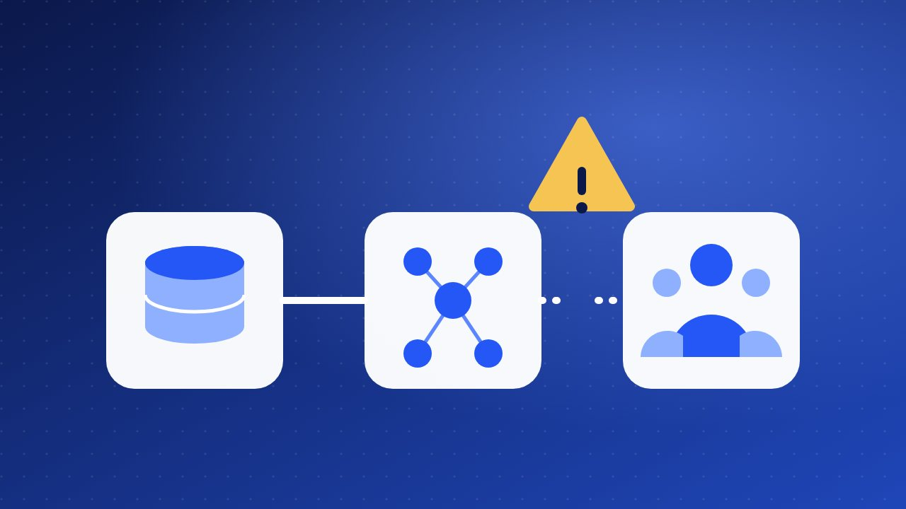

কেন বেশিরভাগ ডেটা ও এআই প্রকল্প ব্যর্থ হয়?
মডেল খারাপ হওয়ার চেয়ে বেশি ঘটে সমস্যাটাই ঠিকমতো না বোঝা। ব্যর্থতার কারণ বেশিরভাগই প্রযুক্তির বাইরে।

একটি ই-কমার্স কোম্পানি ছয় মাস ধরে বিক্রির পূর্বাভাস দেওয়ার একটি মডেল বানাল। ডেমোতে সবাই খুশি, হাততালি পড়ল। কিন্তু কয়েক মাস পরে দেখা গেল, কেউ মডেলটি ব্যবহার করছে না। কারণ শুরুতে কেউ জিজ্ঞেস করেনি, এই পূর্বাভাস দিয়ে কোন সিদ্ধান্ত বদলাবে? (উদাহরণটি কাল্পনিক, তবে এমন গল্প অনেক জায়গায় শোনা যায়।)
বিভিন্ন সমীক্ষা ও শিল্প-প্রতিবেদনে বলা হয়, বহু ডেটা ও এআই প্রকল্প প্রত্যাশা পূরণ করতে পারে না। সংখ্যাটা উৎসভেদে আলাদা, তাই আমি কোনো নির্দিষ্ট শতাংশ বলছি না। কিন্তু কারণগুলো বারবার প্রায় একই, আর তার বেশিরভাগই প্রযুক্তির বাইরে।
ব্যর্থতার সাতটি সাধারণ কারণ
১. সমস্যাটি স্পষ্ট নয়
“আমরা এআই দিয়ে কিছু করব” একটি লক্ষ্য নয়। কোন সমস্যা মেটাবে, কোন কাজ বা সিদ্ধান্ত বদলাবে, তা না জানলে প্রকল্প দিক হারায়। সমাধান: এক বাক্যে লিখুন, “এই কাজটি এভাবে বদলালে আমাদের এই সুবিধা হবে।”
২. ডেটা নেই, বা ডেটার মান খারাপ
ডেটা অসম্পূর্ণ, ভুল বা ছড়ানো ছিটানো এক্সেল ফাইলে থাকলে সেরা মডেলও ভুল ফল দেয়। ময়লা ইনপুটে ভালো আউটপুট আসে না। সমাধান: মডেল বানানোর আগে ডেটা অডিট করুন। কী আছে, কতটা ঠিক, কে হালনাগাদ রাখে, তা দেখুন।
৩. ব্যবসার দিক থেকে কেউ মালিক নন
প্রযুক্তি টিম বানায়, কিন্তু ব্যবসার টিম দায় নেয় না। ফলে ফল কাজে লাগে না। সমাধান: ব্যবসার পক্ষ থেকে একজন নির্দিষ্ট মালিক রাখুন, যিনি ফল ব্যবহার করবেন এবং দায়ী থাকবেন।
৪. পাইলটেই আটকে যাওয়া
ডেমো ভালো চলে, কিন্তু বাস্তব সিস্টেমের সঙ্গে জোড়া লাগাতে গেলে নিরাপত্তা, খরচ ও প্রযুক্তিগত জটিলতা বেরিয়ে আসে। সমাধান: শুরু থেকেই ভাবুন, এটি বাস্তবে কীভাবে চালু হবে, কে চালাবে এবং খরচ কত।
৫. মানুষ ও কাজের ধারা উপেক্ষা করা
কর্মীরা নতুন ব্যবস্থায় ভরসা পান না, ভয় পান, অথবা প্রশিক্ষণই পান না। তখন সবচেয়ে ভালো টুলও পড়ে থাকে। সমাধান: শুরু থেকে যাঁরা ব্যবহার করবেন তাঁদের যুক্ত করুন, প্রশিক্ষণ দিন এবং তাঁদের মতামত শুনুন।
৬. প্রত্যাশা বাস্তবের সঙ্গে মেলে না, মাপার উপায়ও নেই
এআইকে জাদুকরী সমাধান ভাবলে হতাশা আসে। আবার সাফল্য কোন সংখ্যায় মাপা হবে ঠিক না থাকলে বোঝাই যায় না প্রকল্প কাজ করছে কি না। সমাধান: শুরুর আগেই “আগে” ও “পরে”র সংখ্যা ঠিক করুন, যেমন সময় কত বাঁচল, ভুল কত কমল, বিক্রি কত বাড়ল।
৭. চালুর পর রক্ষণাবেক্ষণ নেই
বাজার, গ্রাহক ও ডেটা বদলায়। মডেল না হালনাগাদ করলে তা ধীরে ধীরে পুরোনো ও ভুল হয়ে যায়। সমাধান: চালুর পরেও কাজের মান নজরে রাখুন, কে দেখবেন তা ঠিক করুন এবং নিয়মিত হালনাগাদের সময় রাখুন।
বেশিরভাগ প্রকল্প মডেলের দোষে ব্যর্থ হয় না। ব্যর্থ হয় প্রশ্ন, ডেটা, মানুষ আর দায়িত্ব ঠিক না থাকার কারণে।
নৈতিকতা ও গোপনীয়তা শেষে নয়, শুরুতে
ক্রেতার ব্যক্তিগত তথ্য, পক্ষপাতদুষ্ট ডেটা, বা ভুল সিদ্ধান্তের দায় মাঝপথে সামনে এলে প্রকল্প থামিয়ে দিতে হতে পারে। শুরুতেই ঠিক করুন, কোন তথ্য সত্যিই দরকার, কার অনুমতি লাগবে এবং স্বয়ংক্রিয় সিদ্ধান্তের দায় কার। এ নিয়ে আমার আগের লেখাগুলোর ধারণা এখানেও খাটে।
শুরুর আগের সাত প্রশ্নের চেকলিস্ট
- কোন সিদ্ধান্ত বা কাজ বদলাবে?
- সাফল্য কোন সংখ্যায় মাপব?
- ডেটা কোথায় আছে, আর কতটা নির্ভরযোগ্য?
- ব্যবসার দিক থেকে মালিক কে?
- চালু হলে কে, কীভাবে ব্যবহার করবেন?
- ভুল হলে ফিরে যাওয়ার পথ কী?
- চালুর পরে কে দেখভাল করবেন?
সাতটির উত্তর না থাকলে প্রকল্প শুরু না করে আগে উত্তর খুঁজুন। এতে সময় ও টাকা দুটোই বাঁচে।
ছোট করে শুরু করুন
একটি ছোট সমস্যা বেছে নিন, চার থেকে ছয় সপ্তাহে একটি সহজ সমাধান চালু করে আগে-পরের সংখ্যা মিলিয়ে দেখুন। কাজ করলে তবেই বাড়ান। আর মনে রাখবেন, সব সমস্যায় এআই লাগে না। একটি সাধারণ রিপোর্ট বা নিয়ম দিয়েই কাজ হয়ে গেলে সেটিই ভালো সমাধান।
শেষ কথা
ব্যর্থ প্রকল্প থেকেও শেখা যায়, তবে শেখার দামটা কম রাখাই বুদ্ধিমানের কাজ। আগে প্রশ্ন, তারপর ডেটা, তারপর মডেল। নিজের ব্যবসায় ডেটা বা এআই প্রকল্প শুরু করতে চাইলে আমার সঙ্গে যোগাযোগ করুন। ই-কমার্সে এআই কাজে লাগানোর উদাহরণ দেখতে পড়ুন এই লেখাটি।
মন্তব্য